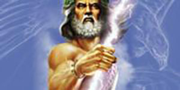
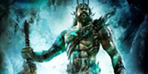

Zeus overthrew his Father Cronus. He then drew lots with his brothers Poseidon and Hades. Zeus won the draw and became the supreme ruler of the gods. He is lord of the sky, the rain god. His weapon is a thunderbolt which he hurls at those who displease him. He is married to Hera but, is famous for his many affairs. He is also known to punish those that lie or break oaths.
Hades is the brother of Zeus. After the overthrow of their Father Cronus he drew lots with Zeus and Poseidon, another brother, for shares of the world. He had the worst draw and was made lord of the underworld, ruling over the dead. He is a greedy god who is greatly concerned with increasing his subjects. Those who’s calling increase the number of dead are seen favorably

Poseidon is the brother of Zeus. After the overthrow of their Father Cronus he drew lots with Zeus and Hades, another brother, for shares of the world. His prize was to become lord of the sea. He was widely worshiped by seamen. He married Amphitrite, a granddaughter of the Titon Oceanus
Ares is the son of Zeus and Hera. He was disliked by both parents. He is the god of war. He is considered murderous and bloodstained but, also a coward. When caught in an act of adultery with Aphrodite her husband Hephaestus is able publically ridicule him. His bird is the vulture. His animal is the dog.